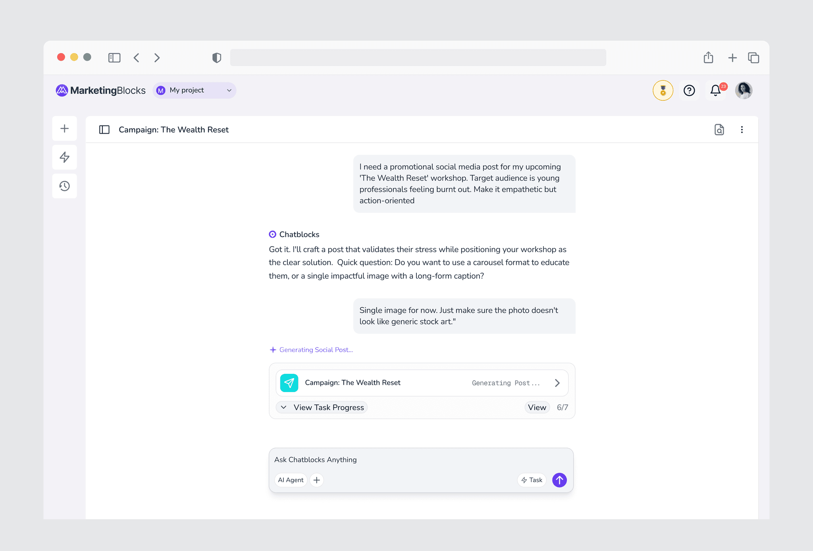
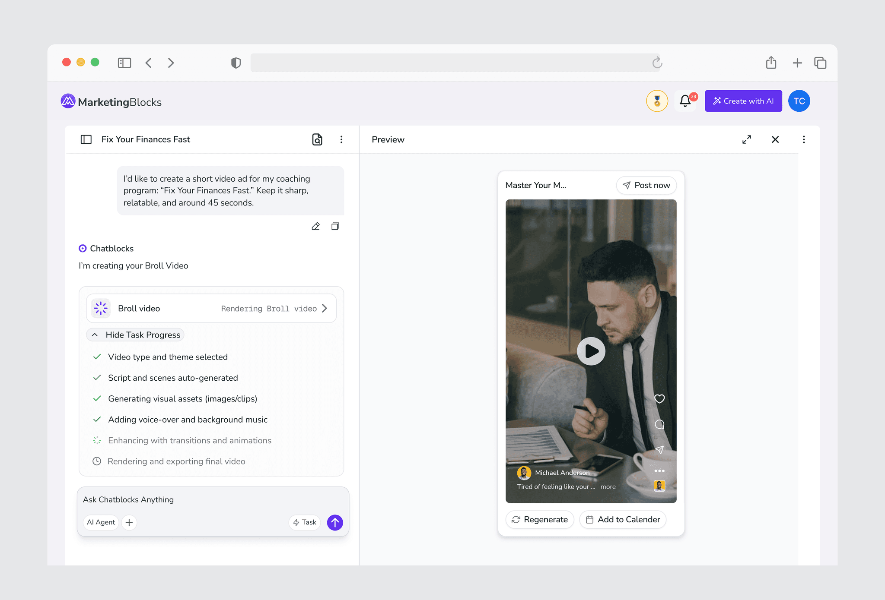
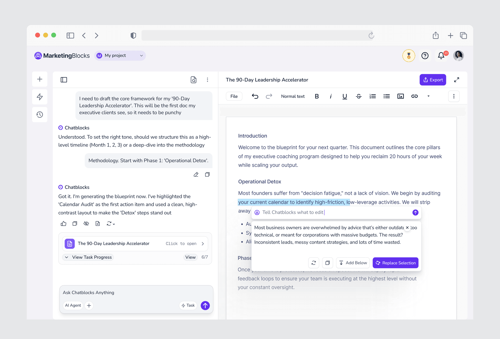
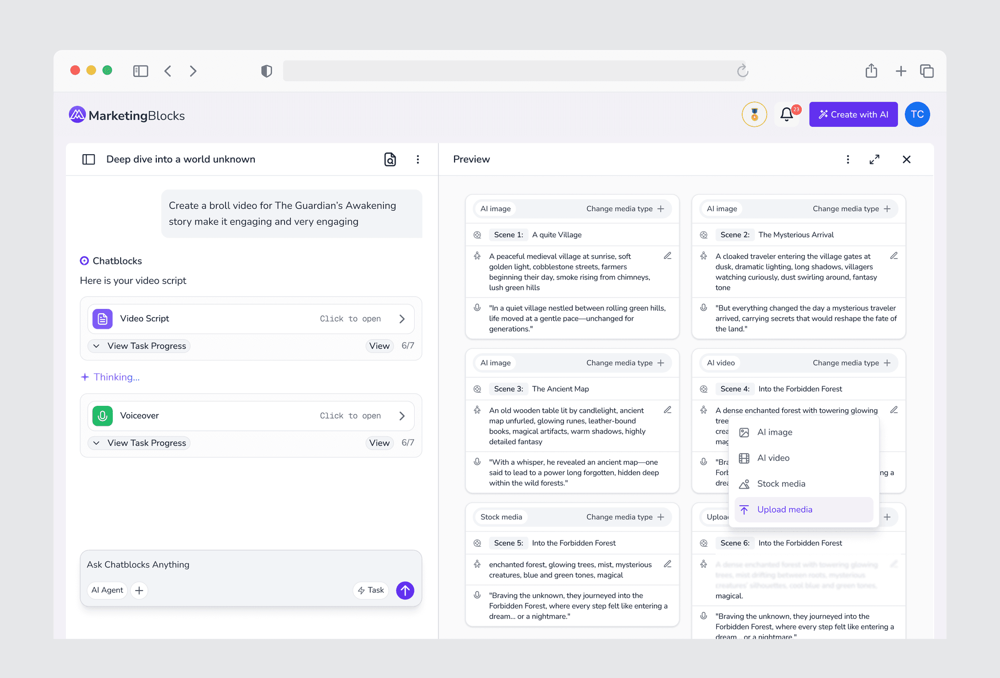
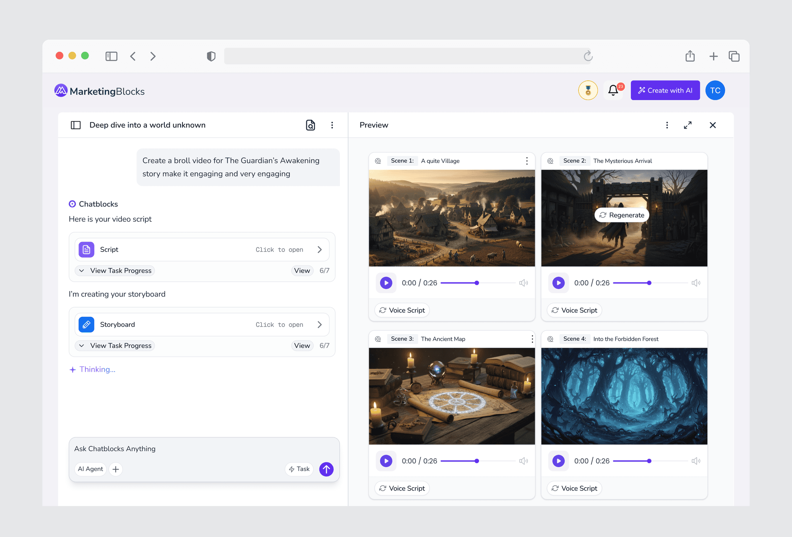
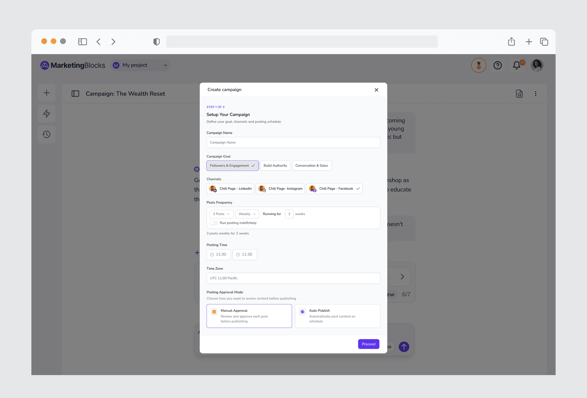
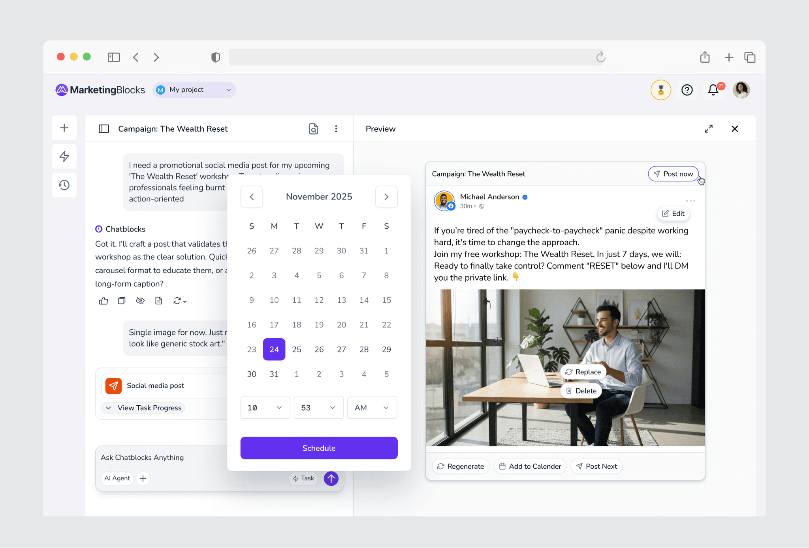

The Challenge
MarketingBlocks AI already had powerful tools for creating videos, writing copy, designing visuals, and producing campaign assets. But getting everything from creation to publishing still involved a lot of manual work.
Users had to move between tools, download assets, reformat content, and upload everything to different platforms. The AI could create the content, but users were still doing most of the work to get it out there.
I led the design of Chatblocks to change that.
The Solution
The idea was to bring the entire process into one workspace, where users could go from a simple idea to a campaign ready for publishing, with an AI agent helping along the way.
Rather than building another chatbot, I designed Chatblocks around how people actually work. Users could start by describing what they wanted to create, whether it was a campaign, video, social post, or landing page. From there, the AI could understand the request, guide the process, and generate the assets needed.

Intent-Driven Starting Point
For users who weren’t sure what to ask, I added suggested starting prompts such as “create a campaign” or “write a social post”.
Visible AI Progress
I also wanted users to feel involved in the process, rather than simply waiting for the AI to return a result. So I designed live progress updates that showed what the agent was working on, from researching an audience to writing scripts and generating assets.

In-Context Editing
AI-generated content isn’t always perfect on the first try. Users need to make changes, try different directions, and have a say in the final result.
I designed an in-context editing experience that let users refine scripts, captions, avatars, voiceovers, and visuals without leaving the conversation.



Approval & Publishing Flow
I also introduced approval steps throughout the workflow. Users could review what the agent created, request changes, and approve outputs before moving forward.
The goal was to make automation feel collaborative, not restrictive. The AI handled the repetitive production work, and users made the decisions that mattered.


Outcome
Chatblocks brought MarketingBlocks AI’s separate creative tools into one connected experience. Users could move from an idea through research, content creation, editing and approval, with a much clearer path to publishing.
Campaign creation time dropped by 45%.